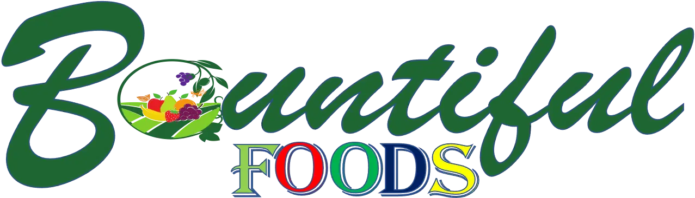

Overview
This is the Bountiful Site Plan. It describes the site name, purpose, target audience with scenarios, site map with navigation, color scheme, and application. The site plan usually contains wire-frame sketch fo the different views.
Site Name
foodbountiful.org
>Site Purpose
Bountiful Foods is small business specializing in organic, locally grown foods. They are physically located in Carlsbad, California, however, they have many food trucks that cover the coastal area from Los Angeles to San Diego. The company sells fruits and produce directly from the farmers in the area, but also uses some national and international suppliers. The owner-operated company caters to walk in traffic at their storefront in Carlsbad and, of course, their food trucks. They deliver and manage those orders on the phone and via the website. The mission is to provide fresh and healthy food options, including organic, made to order, fruit drinks and fruit bags, to the local population and to tourists visiting the coastal areas. The theme should support healthy eating, organic bounty, and convenience.
Target Audience
The audience are prospective franchise owners who are interested to invest in organic fruit drinks and for customers who are on a diet and looking for a healthy product to help lose weight.
Scenarios
- A party organizer who are looking for drink products to serve in their upcoming event.
- A franchise owner who are is looking for healthy drink products to sell
- A famous actress who is on a diet and carries the product with her.
Branding
Bountiful Food Logo
Color Scheme
Color Palette
Palette URL: https://coolors.co/1f6631-7fcc29-ff2905-fefd32-7c1654-361c29| Primary | Secondary | Accent 1 | Accent 2 | Accent3 | Accent4 |
|---|---|---|---|---|---|
| #1F6631 | #7FCC29 | #FF2905 | #EDCE27 | #7C1654 | #361c29 |
Typography
Heading Font: Bree Seri, sans-serif
Paragraph Font: Lato, balsa miq, bree-serif, sans-serif
>